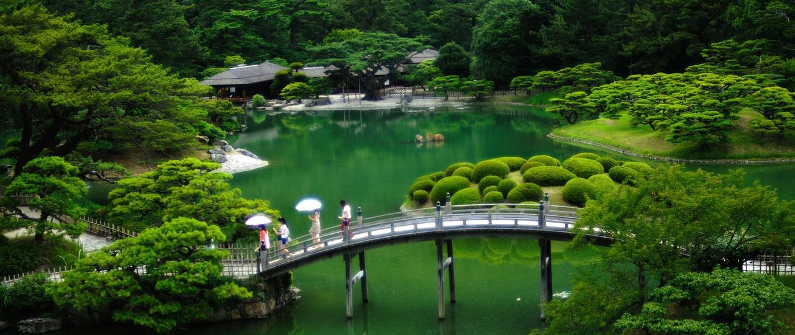

Giardini giapponesi
Anche i giapponesi furono grandi "costruttori" di giardini. Essi diventarono infine parte integrante del loro patrimonio nonostante furono all'inizio solo una continuazione dei giardini cinesi. Si sono infatti ispirati a questi per certi dei loro essenziali principi: la messa al bando rigorosa di ogni simmetria; il rifiuto di lasciare che i loro parchi si svolgano nella loro interezza, costringendoli a presentarsi come una successione di punti di vista imprevedibili; il desiderio di mostrare "il piccolo nel grande" e - forse ancora di più - "il grande nel piccolo" (da qui la moltiplicazione dei Bonzai o giardini in miniatura, perché per i giapponesi, come per i cinesi, non ci sono dimensioni assolute); infine, il desiderio di dare loro un potere di "disimpegno mentale" simile a quello di cui abbiamo parlato nei giardini cinesi e che lo shintoismo doveva portare alle sue ultime conseguenze.
Tuttavia il trasferimento dei giardini cinesi in Giappone non è stato dovuto allo scontro degli eserciti, nemmeno a una qualsiasi invasione militare. È il risultato dei numerosi e variegati contatti legati fin dal VI° secolo tra i viaggiatori giapponesi e gli artisti, eruditi, artigiani-tecnici e pensatori sino-coreani. Quelli hanno introdotto in Giappone il gusto di elevare il valore di certi siti integrandoli in una archittetura di vegetazione e di pietre.
Ma anche se il trasferimento è stato diretto, i giapponesi hanno comunque lasciato la loro impronta nei loro giardini. Quindi ciò che li rende attraenti - al di là di una intriseca bellezza che basterebbe a giustificare la loro esistenza - è il modo in cui il genio nazionale nipponico, così puro e fondato su un'importante economia di mezzi, è riuscito a emergere dallo stile grandioso e si è liberato infine di ogni influenza estera.
Dimensione diversa
Se i giardini giapponesi vengono da quelli cinesi vi sono elementi con i quali giardini cinesi e giapponesi differiscono. Innanzitutto le dimensioni della Cina non sono le stesse del Giappone. Da un lato, un enorme subcontinente che copre più di 9,5 milioni di chilometri quadrati, contenente pianure, altipiani, steppe, montagne e deserti. Dall'altra, una sottile serie di isole frastagliate, irte di vulcani e periodicamente devastate da tifoni e terremoti. Un tale contrasto poteva non rispecchiarsi nella configurazione dei loro giardini?
In Cina, dove lo spazio è illimitato, questi potevano facilmente estendersi su un'intera provincia e comprendere un lago, una foresta, una montagna o persino l'estuario di un fiume all'interno dei loro confini. In Giappone, i giardini non solo erano più piccoli a causa del limitato spazio disponibile, ma erano anche sotto costante minaccia di distruzione. Da qui il loro aspetto più concentrato ed elaborato; anche più struggente, come se fossero consapevoli del pericolo che costantemente si aggirava intorno a loro. Se ogni giardino cinese era una vittoria su una natura rozza ma alla fine benevola, ogni giardino giapponese era una vittoria su elementi ostili, una piccola fetta di vita in lotta con la morte.
Temperamento diverso
In secondo luogo, c'è un profondo contrasto tra il temperamento cinese e quello giapponese. I cinesi erano per la maggior parte terrestri positivi e scettici, pacifici fino all'apatia, molto innamorati della vita e non desiderosi di altro, eminentemente creativi, ma schiacciati dal peso di un funzionarismo abusivo. I giapponesi erano soprattutto guerrieri turbolenti, con un'impulsività fremente. Con la mente sempre all'erta, i nervi sempre tesi, erano pronti a uccidere o a morire per nulla, davano poca importanza alla vita o alla morte, ma erano appassionatamente innamorati della bellezza e intrattabili ogni volta che sentivano che era in gioco il loro onore, vivevano non solo all'ombra dei vulcani, ma in mezzo a uno spargimento di sangue perpetuamente rinnovato dalle lotte dei capi clan e dalle guerre interne.
La principale preoccupazione dei loro dirigenti era di frenare la loro agressività inculcando loro la cortesia, il gusto per il ceremoniale, un senso di bellezza capace di calmare la loro frenesia e una regola di vita i cui tratti predominanti erano la disciplina, la devozione all'imperatore e l'autocontrollo spinto fino all'impassibilità. Se i giardini cinesi erano stati progettati per liberare l'uomo da tutti i vincoli, i giardini giapponesi erano stati ideati per imporne. Come si vede ciò che minacciava costantemente l'anima giapponese non era la gogna soffocante di una burocrazia abusiva: ma l'anarchia.
I primi giardini giapponesi
I giardini primitivi giapponesi risalgono al VI° secolo e venivano costruiti seguendo un modello invariante di cui gli elementi costitutivi erano un assemblaggio di pietre verticali, un ponte, uno stagno o un'isola. Purtroppo non ne sappiamo di più nei loro confronti perché sono tutti stati destrutti da terremoti. Bisogna aspettare la fine del VII° secolo per farci un'idea più precisa dei giardini giapponesi. Però a quest'epoca - strano fenomeno - non ci troviamo più di fronte a giardini giapponesi ma di fronte a giardini cinesi importati dal continente. La storia dei giardini giapponesi offre a coloro che sanno identificarne le linee principali uno spettacolo affascinante: la rinascita - prima timida, poi fiduciosa e infine trionfante - dei giardini specificamente nipponici attraverso l'alluvione fertilizzante dei giardini cinesi.